Reshaping Data: Pivot, Melt, Stack & Crosstab
Master the art of transforming DataFrame layouts without losing information. Convert between Wide reporting tables and Tidy Long analytics matrices using pivot(), pivot_table(), melt(), stack(), unstack(), wide_to_long(), and crosstab().
Table of Contents
Explore the complete landscape of Pandas data reshaping tools. Click on any section below to jump directly to its concepts, diagrams, code examples, and verified outputs.
1. What is Data Reshaping? Wide vs Long Format
In data analysis, Data Reshaping (Data Transformation) ka matlab hota hai DataFrame ke physical structure ya layout ko badalna, bina uske underlying data points ya meaning ko change kiye. Yaani observations wahi rehte hain, par unhe dekhne ka nazariya (orientation) badal jata hai.
Real life mein aksar aisa hota hai ki data jis format mein database ya Excel file se aata hai, woh format machine learning ya visual plotting ke liye bilkul suitable nahi hota. Let's look at two relatable scenarios:
University ka centralized database har subject exam score ko ek nayi row mein record karta hai:
(Aman, Maths, 80), (Aman, Python, 90), (Priya, Maths, 92)...
Lekin principal ya faculty ko jab report card dekhna hota hai, toh unhe ek student per row chahiye, aur har subject (Maths, Python, Stats) alag columns mein dikhna chahiye! Is conversion ko hum Long to Wide Reshaping kehte hain.
E-commerce manager ko 12 months ke sales dekhne hain. Ek monthly executive presentation mein har store ke aage Jan, Feb, Mar ke columns hona easy to read lagta hai. Lekin jab data science team ko machine learning model train karna ho ya time-series chart plot karna ho, toh unhe ['store', 'month', 'revenue'] format ki zaroorat hoti hai! Is reverse transformation ko hum Wide to Long Reshaping kehte hain.
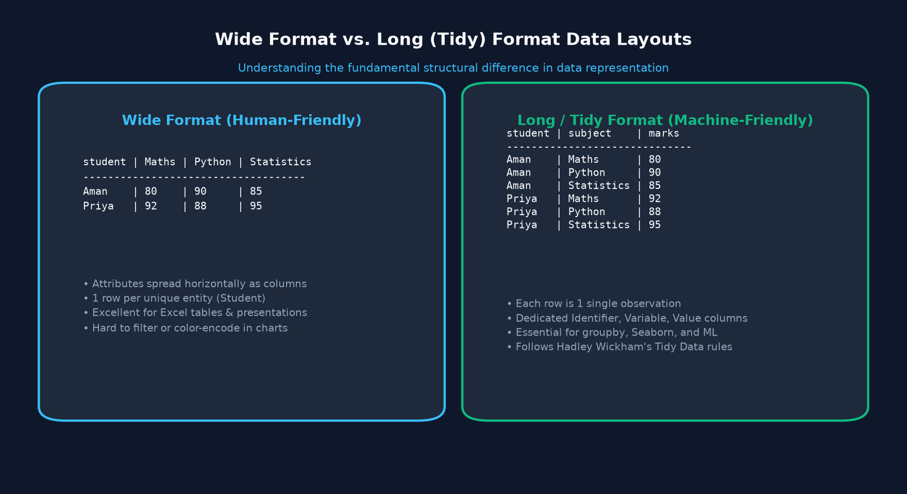
Side-by-Side Comparison: Wide Data vs Long Data
Wide-Format Data Example:
| student | Maths | Python | Statistics |
|---|---|---|---|
| Aman | 80 | 90 | 85 |
| Priya | 92 | 88 | 95 |
Long-Format Data Example (Tidy Data):
| student (Identifier) | subject (Variable) | marks (Value) |
|---|---|---|
| Aman | Maths | 80 |
| Aman | Python | 90 |
| Aman | Statistics | 85 |
| Priya | Maths | 92 |
| Priya | Python | 88 |
| Priya | Statistics | 95 |
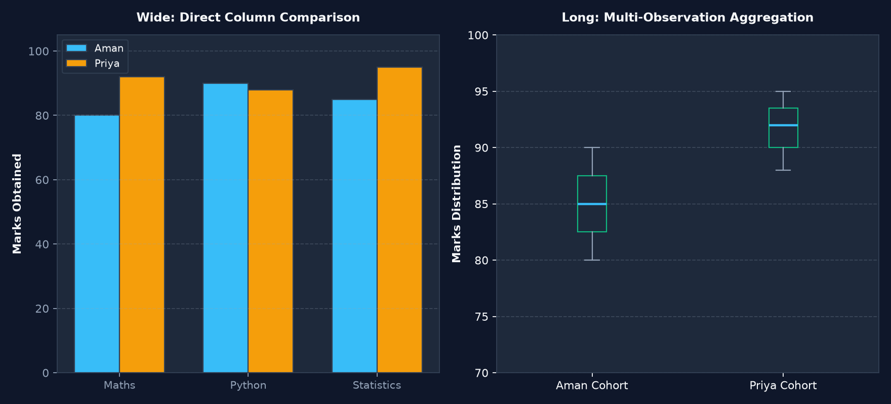
When Should You Use Wide vs Long Format?
| Dimension / Requirement | Wide-Format Data | Long (Tidy) Format Data |
|---|---|---|
| Primary Purpose | Human presentation, executive dashboards, matrix algebra, Excel exports. | Database storage, machine learning feature matrices, Seaborn charts, group aggregations. |
| Row Definition | 1 row per unique entity (e.g. 1 student, 1 store, 1 patient). | 1 row per unique measurement/event (e.g. 1 student in 1 exam). |
| Adding New Variables | Requires adding a new column header. | Simply append new rows with the new variable name! |
| Filtering & Grouping | Clunky: filtering requires checking multiple individual columns. | Elegant: df[df['subject'] == 'Python'] or df.groupby('subject'). |
2. Understanding DataFrame.pivot()
Pandas ka DataFrame.pivot() method data ko Long Format se Wide Format mein reshape karta hai. Yeh table ke unique values ko row index aur column headers mein restructure kar deta hai.
Think of it like spinning a table around an axis: ek column ke distinct values naye column headers ban jaate hain, aur doosra column row labels ban jata hai.
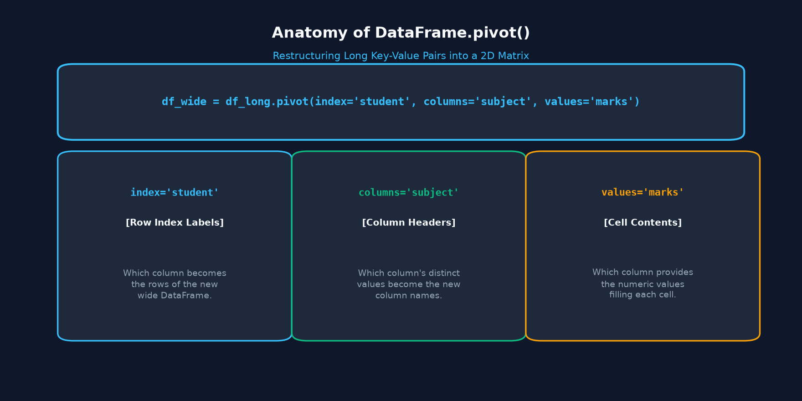
The Three Crucial Parameters of pivot()
Jab bhi aap pivot() call karte hain, aapko 3 sawalon ke jawab dene hote hain:
index=: Naye wide DataFrame ke rows mein kya aayega? (e.g.studentyastore_id).columns=: Naye columns headers kahan se banenge? (e.g.subjectyamonth).values=: Cells ke andar kaun si numeric ya text values bharni hain? (e.g.marksyarevenue).
Code Example 1 (College): Reshaping Student Subject Records
Let's create a long table containing subject marks for Aman and Priya, and pivot it so each subject becomes a column:
import pandas as pd # Long format: Har row ek student-subject exam attempt hai df_marks_long = pd.DataFrame({ "student": ["Aman", "Aman", "Priya", "Priya"], "subject": ["Maths", "Python", "Maths", "Python"], "marks": [80, 90, 92, 88] }) # Reshape from Long to Wide using pivot() df_marks_wide = df_marks_long.pivot( index="student", columns="subject", values="marks" ) print(df_marks_wide)
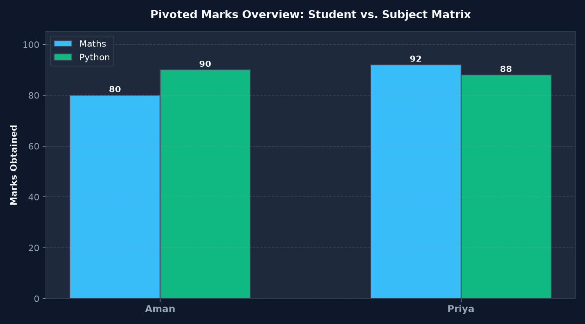
Code Example 2 (E-Commerce): Reshaping Store Monthly Sales
In retail analytics, transactions arrive continuously per month. Pivoting converts sequential monthly records into a store-by-month comparative ledger:
# Monthly sales log df_sales_long = pd.DataFrame({ "store": ["Store_A", "Store_A", "Store_B", "Store_B"], "month": ["Jan", "Feb", "Jan", "Feb"], "revenue": [12000, 15000, 18000, 21000] }) df_sales_wide = df_sales_long.pivot( index="store", columns="month", values="revenue" ) print(df_sales_wide)
The Dangerous Duplicate Key Trap in pivot()
Yahan sabse zaroori concept aata hai jo har beginner ko confuse karta hai: pivot() tabhi kaam karta hai jab har (index, column) pair uniquely ek single value identify kare!
Agar aapke input data mein Aman ke Maths subject ke do alag records maujood hain (jaise Midterm aur Final exam), toh pivot() crash ho jayega aur ek ValueError raise karega! Kyunki pivot ke paas yeh decide karne ka koi tarika nahi hai ki cell mein 80 daale ya 85!
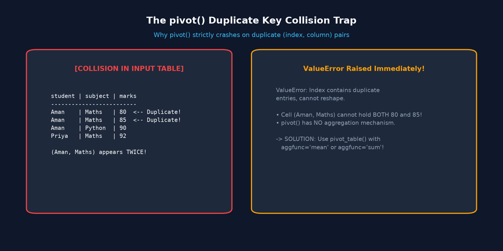
# Aman has 2 entries for 'Maths' df_duplicate = pd.DataFrame({ "student": ["Aman", "Aman", "Priya"], "subject": ["Maths", "Maths", "Python"], "marks": [80, 85, 92] }) try: df_duplicate.pivot(index="student", columns="subject", values="marks") except ValueError as err: print("CAUGHT EXPECTED ERROR:", err)
Agar aapka pivot() fail ho jaye, toh yeh one-liner chala kar duplicate rows dhoondein:
df[df.duplicated(subset=['student', 'subject'], keep=False)].
Yeh aapko turant woh saari rows dikha dega jinki wajah se collision ho raha hai!
3. Understanding DataFrame.pivot_table()
Jab aapke input dataset mein duplicate (index, column) pairs hote hain, toh solution hota hai: DataFrame.pivot_table(). Yeh method data ko reshape karne ke saath-saath multiple values ko mathematical aggregation ke zariye single value mein convert karta hai.
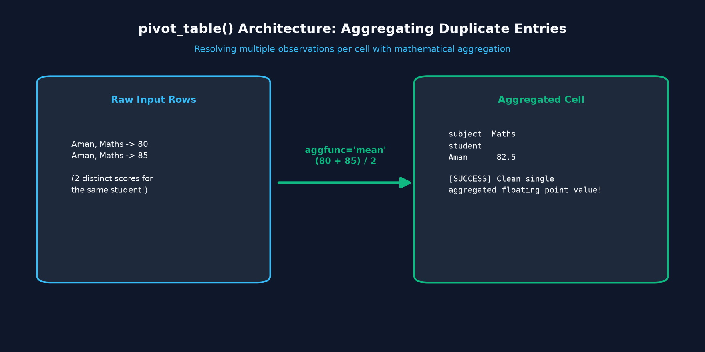
Key Parameters of pivot_table()
| Parameter | Default | Role & Architectural Significance |
|---|---|---|
index |
Required | Row keys grouping the output index. |
columns |
Required | Headers creating the horizontal columns matrix. |
values |
None |
Numeric column(s) to aggregate. If None, aggregates all numeric columns. |
aggfunc |
'mean' |
Aggregation formula: 'mean', 'sum', 'count', 'min', 'max', ya custom function. |
fill_value |
None |
Value to substitute for missing grid intersections (e.g. fill_value=0). |
margins |
False |
Agar True karein, toh ek extra row aur column 'All' add ho jata hai jisme overall totals/averages hote hain! |
Code Example 1 (College): Resolving Duplicate Scores via aggfunc='mean'
Let's take the exact duplicate table that crashed pivot() above and cleanly resolve it with pivot_table():
import pandas as pd df_dup_marks = pd.DataFrame({ "student": ["Aman", "Aman", "Aman", "Priya"], "subject": ["Maths", "Maths", "Python", "Maths"], "marks": [80, 85, 90, 92] }) # Resolve duplicates using mean aggregation df_pt_mean = df_dup_marks.pivot_table( index="student", columns="subject", values="marks", aggfunc="mean" ) print(df_pt_mean)
Notice Aman's Maths score: (80 + 85) / 2 = 82.5. The collision was resolved cleanly without raising any error!
Code Example 2 (E-Commerce): Multi-Transaction Monthly Revenue with margins=True
In this retail scenario, multiple orders occur for the same store within the same month. Because the business question asks for Total Revenue, we strictly choose aggfunc='sum' and enable subtotal margins:
# Multi-transaction retail log df_orders = pd.DataFrame({ "store": ["Store_A", "Store_A", "Store_B", "Store_A", "Store_C"], "month": ["Jan", "Jan", "Jan", "Feb", "Feb"], "revenue": [1500, 1500, 5100, 2500, 3600] }) # Total revenue matrix with fill_value=0 and margins=True df_pt_store = df_orders.pivot_table( index="store", columns="month", values="revenue", aggfunc="sum", fill_value=0, margins=True ) print(df_pt_store)
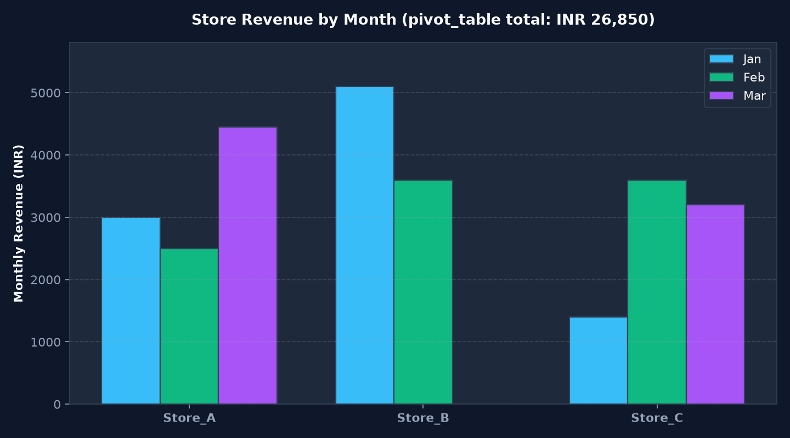
Pandas defaults to aggfunc='mean'. If you are calculating revenue, units sold, or transaction amounts, forgetting to specify aggfunc='sum' will silently compute average order value instead of total revenue, misreporting business figures by an order of magnitude!
4. pivot() versus pivot_table(): When to Use Which
Senior data scientists distinguish clearly between pure reshaping and statistical summarization. Let us contrast both methods side-by-side:
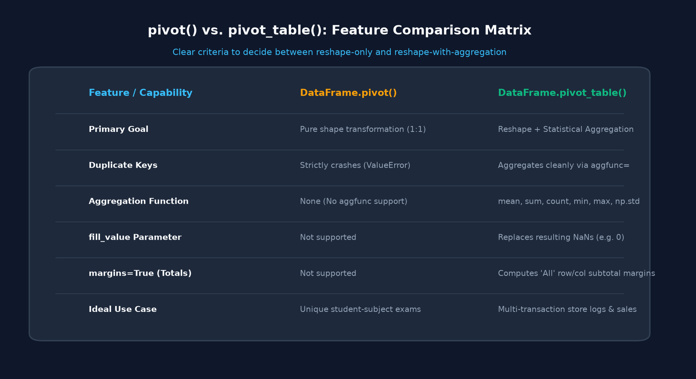
Architectural Decision Rule
• Use pivot() when each (index, column) combination identifies a single unique observation (e.g., student semester exam, fixed daily stock close). If duplicates exist, you want an immediate crash because duplicates indicate corrupted data!
• Use pivot_table() when multiple observations exist per cell that naturally need mathematical aggregation (e.g., thousands of e-commerce transactions per store per month).
Side-by-Side Code Comparison
import pandas as pd df_demo = pd.DataFrame({ "student": ["Aman", "Aman", "Priya", "Priya"], "subject": ["Maths", "Python", "Maths", "Python"], "marks": [80, 90, 92, 88] }) # Scenario 1: pivot() returns clean integer matrix res_pivot = df_demo.pivot(index="student", columns="subject", values="marks") # Scenario 2: pivot_table() returns float matrix (due to mean calculation) res_pt = df_demo.pivot_table(index="student", columns="subject", values="marks", aggfunc="mean") print("--- pivot() Result (dtypes: int64) ---") print(res_pivot.dtypes) print("\n--- pivot_table() Result (dtypes: float64) ---") print(res_pt.dtypes)
5. Understanding pd.melt(): The Reverse Unpivot Operation
Agar pivot() data ko Wide banata hai, toh pd.melt() uska exact opposite (reverse-style) operation hai. Yeh wide columns ko unpivot karke wapas tidy Long Format mein convert karta hai.
Think of it like melting an ice tray: wide horizontal columns melt down into sequential vertical rows.
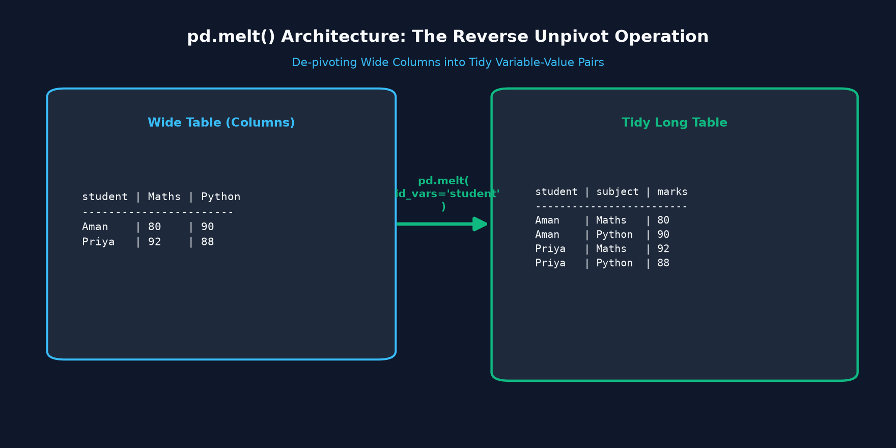
The Four Key Arguments of melt()
id_vars: Identifier columns jinhe as-it-is preserve rakhna hai (e.g.'student'ya'store').value_vars: Kaun se columns ko melt (unpivot) karna hai. (Agar specify na karein, tohid_varske alawa saare columns melt ho jaate hain).var_name: Naye category/variable column ka naam kya hoga (e.g.'subject'ya'month'). Defaults to'variable'.value_name: Measured numerical values wale column ka naam kya hoga (e.g.'marks'ya'revenue'). Defaults to'value'.
Code Example 1 (College): Melting Subject Scores to Tidy Format
import pandas as pd # Wide table: Subjects spread as columns df_wide_marks = pd.DataFrame({ "student": ["Aman", "Priya"], "Maths": [80, 92], "Python": [90, 88], "Statistics": [85, 95] }) # Unpivot using pd.melt() df_long_marks = pd.melt( df_wide_marks, id_vars="student", value_vars=["Maths", "Python", "Statistics"], var_name="subject", value_name="marks" ) print(df_long_marks)
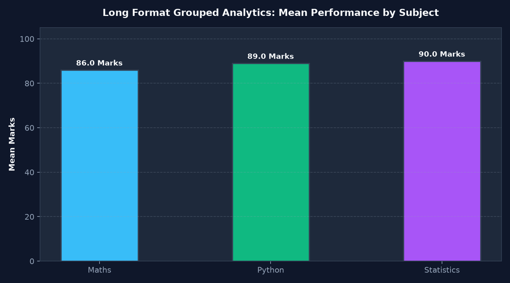
Code Example 2 (E-Commerce): Converting Wide Monthly Sales to Long Ledger
In this retail scenario, quarterly reporting columns are unpivoted into a transaction-friendly format for database storage:
# Wide store monthly report df_wide_sales = pd.DataFrame({ "store": ["Store_A", "Store_B"], "city": ["Mumbai", "Bengaluru"], "Jan": [12000, 18000], "Feb": [15000, 21000], "Mar": [19000, 24000] }) # Preserving multiple identifiers: ['store', 'city'] df_long_sales = pd.melt( df_wide_sales, id_vars=["store", "city"], value_vars=["Jan", "Feb", "Mar"], var_name="month", value_name="revenue" ) print(df_long_sales.head(4))
Agar aap id_vars pass karna bhool jate hain, toh Pandas DataFrame ke har single column ko melt kar dega! Aapka student name ya store ID bhi value column mein chala jayega, causing catastrophic data corruption!
6. pivot() and melt() as Complementary Operations
In data engineering, pivot() aur melt() ko Yin and Yang of Reshaping mana jata hai. Agar aap Long table ko Wide mein pivot karte hain, toh melt() use karke wapas exact original Long table reconstruct ki ja sakti hai!
Is process ko data engineering mein Round-Trip Verification kehte hain. Agar aapka round-trip 100% match hota hai, toh iska proof hai ki transformation ke dauran koi data point corrupt ya drop nahi hua.
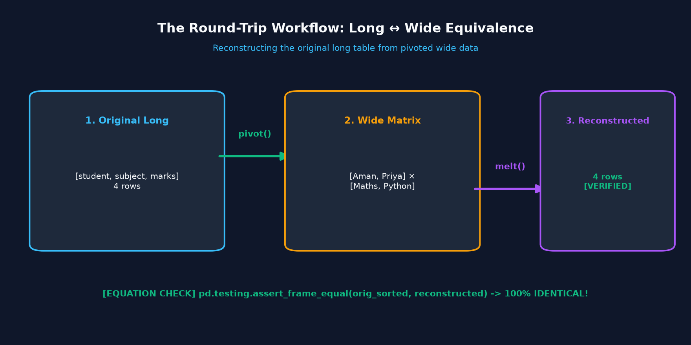
Wide Equivalence" loading="lazy">Code Example 1: Full Round-Trip Reconstruction & assert_frame_equal
import pandas as pd # Step 1: Initial Long DataFrame df_original = pd.DataFrame({ "student": ["Aman", "Aman", "Priya", "Priya"], "subject": ["Maths", "Python", "Maths", "Python"], "marks": [80, 90, 92, 88] }) # Step 2: Transform Long -> Wide via pivot() df_wide = df_original.pivot(index="student", columns="subject", values="marks") # Step 3: Transform Wide -> Long via melt() df_reconstructed = df_wide.reset_index().melt( id_vars="student", value_vars=["Maths", "Python"], var_name="subject", value_name="marks" ) # Step 4: Sort and align before mathematical equality check df_orig_sorted = df_original.sort_values(by=["student", "subject"]).reset_index(drop=True) df_recon_sorted = df_reconstructed.sort_values(by=["student", "subject"]).reset_index(drop=True) # Assert strict equality pd.testing.assert_frame_equal(df_orig_sorted, df_recon_sorted) print("ROUND-TRIP SUCCESS: Reconstructed DataFrame is 100% IDENTICAL to Original!")
Why Care is Required During Round Trips
Real-world datasets mein round-trip karte waqt 4 baaton ka dhyan rakhna zaroori hota hai:
- Index Names:
pivot()set karta hai column name (jaisesubject). Jab aapreset_index()karte hain, toh woh name header ke roop mein bachta hai. - Missing Combinations: Agar original long table mein kisi student ka koi subject missing tha, toh wide table mein
NaNaayega. Jab aap melt karenge, toh wohNaNrow long table mein survive karegi (unless dropped with.dropna()). - Row Ordering:
pivot()index ko sort karta hai, isliye round-trip check karne se pehle dono tables ko sort karna zaroori hai. - Data Types: Agar wide table mein
NaNgenerate hua, toh integer columns float mein convert ho sakte hain.
7. Understanding stack() and unstack()
Aksar data scientists ko tables ko reshape karne ke liye columns aur row indices ke beech 90-degree axis rotation ki zaroorat hoti hai. Pandas mein yeh kaam do complementary methods karte hain: stack() aur unstack().
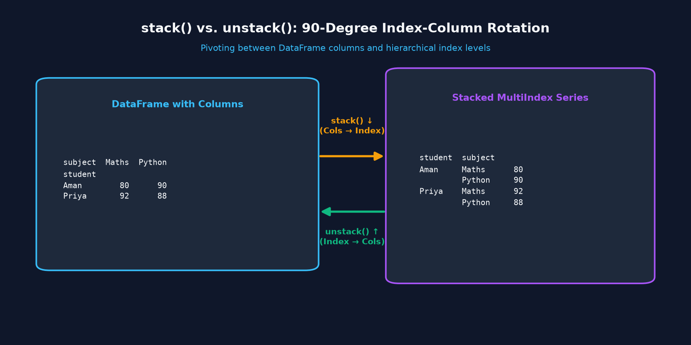
The Fundamental Rules of stack() and unstack()
df.stack(): Columns ko "pack" karke row index ke andar daal deta hai.
• Yeh DataFrame ko aam taur par ek MultiIndex Series mein convert karta hai.
• Mnemonic: "Stacking crates vertically on top of each other."s.unstack(): Row index ke inner level ko "unpack" karke wapas columns bana deta hai.
• Yeh MultiIndex Series ko wapas ek standard 2D DataFrame mein convert karta hai.
• Mnemonic: "Unstacking crates and spreading them horizontally across the floor."
Code Example 1 (College): Stacking Student Columns into a Series
import pandas as pd df_grades = pd.DataFrame( [[80, 90], [92, 88]], index=pd.Index(["Aman", "Priya"], name="student"), columns=pd.Index(["Maths", "Python"], name="subject") ) print("--- Original Wide DataFrame ---") print(df_grades) # Stack columns into index -> Produces MultiIndex Series stacked = df_grades.stack() print("\n--- Stacked MultiIndex Series ---") print(stacked)
Code Example 2: Unstacking with level= Control
By default, unstack() unpivots the innermost index level (level=-1). But you can specify level=0 to unstack the outer student level into column headers instead!
# Default: Unstack level -1 (subject becomes columns) unstacked_def = stacked.unstack() print("--- Default unstack() (level=-1) ---") print(unstacked_def) # Custom: Unstack level 0 (student becomes columns) unstacked_l0 = stacked.unstack(level=0) print("\n--- Custom unstack(level=0) (student as columns) ---") print(unstacked_l0)
8. Understanding MultiIndex Reshaping
Jab kisi DataFrame mein 2 ya usse zyada hierarchical levels hote hain row index ya column headers mein, toh use MultiIndex (Hierarchical Indexing) kehte hain. Yeh feature multi-dimensional data (jaise: Department → Semester → Student) ko represent karne ke liye banaya gaya hai.
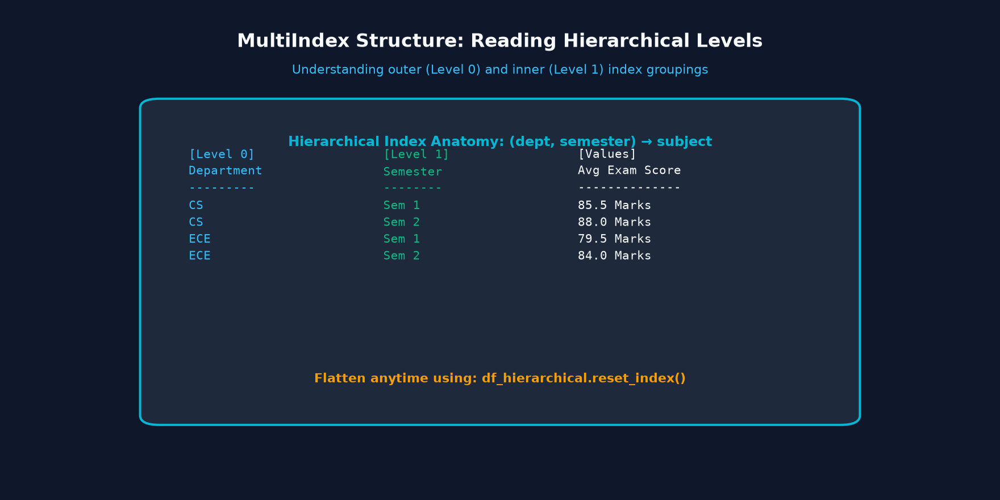
Code Example 1: Creating & Flattening a MultiIndex Table
import pandas as pd df_academic = pd.DataFrame({ "dept": ["CS", "CS", "ECE", "ECE"], "semester": [1, 2, 1, 2], "subject": ["Python", "DBMS", "Signals", "Circuits"], "avg_score": [85.5, 88.0, 79.5, 84.0] }) # Pivot with 2 index levels piv_multi = df_academic.pivot_table( index=["dept", "semester"], columns="subject", values="avg_score" ) print("--- MultiIndex Pivot Table ---") print(piv_multi) # Flattening back to standard 2D table using reset_index() df_flat = piv_multi.reset_index() print("\n--- Flattened DataFrame with reset_index() ---") print(df_flat)
Notice above that the column index retained the header subject. To make your columns completely clean, you can run:
df_flat.columns.name = None.
Yeh extra label ko turant remove kar deta hai!
9. Understanding pd.wide_to_long()
Aksar real-world datasets mein column names ek systematic pattern follow karte hain, jaise marks_2025, marks_2026, ya sales_Q1, sales_Q2. Aise data ko agar hum melt() se unpivot karein, toh humein year ya quarter nikalne ke liye baad mein alag se string slicing karni padti hai.
Pandas ka specialized function pd.wide_to_long() is problem ko directly solve karta hai! Yeh column name ke prefix (stub) aur suffix (numeric variable) ko parse karke automatically ek clean tidy DataFrame bana deta hai.
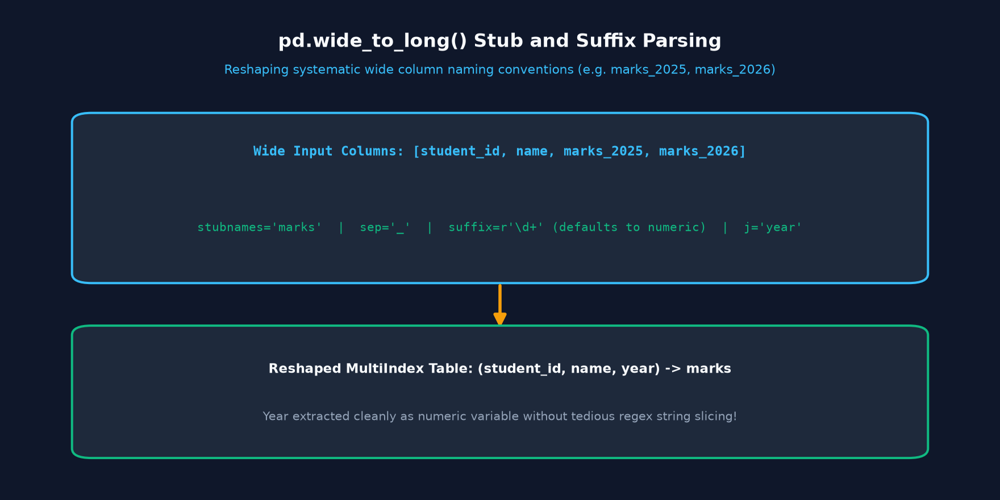
The Key Arguments of wide_to_long()
| Parameter | Meaning & Usage |
|---|---|
stubnames |
Prefix jo wide columns share karte hain (e.g. 'marks' for marks_2025). |
i |
Identifier column(s) jo unique rows define karte hain (e.g. ['student_id', 'name']). |
j |
Naye variable column ka naam jo extracted suffix store karega (e.g. 'year'). |
sep |
Separator character between stub and suffix (e.g. '_'). Defaults to ''. |
suffix |
Regex pattern for suffix matching. Defaults to numeric digits (r'\d+'). |
Code Example 1: Reshaping Student Yearly Marks
import pandas as pd df_wide_years = pd.DataFrame({ "student_id": [101, 102], "name": ["Aman", "Priya"], "marks_2025": [80, 91], "marks_2026": [88, 94] }) # Unpivot using wide_to_long df_long_years = pd.wide_to_long( df_wide_years, stubnames="marks", i=["student_id", "name"], j="year", sep="_" ) print(df_long_years)
Notice how year 2025 and 2026 were cleanly parsed into the index as integers, and marks became the clean values column!
10. Understanding pd.crosstab()
Jab aapko do ya usse zyada categorical variables ke beech frequency count (occurrences) ya percentage proportions dekhne hote hain, toh Pandas ka sabse fast tool hota hai: pd.crosstab().
Unlike pivot_table() jo DataFrame ka method hai, pd.crosstab() ek top-level Pandas function hai jo directly do ya usse zyada Series ya arrays ko input leta hai.
Key Parameters of pd.crosstab()
| Parameter | Options / Default | Purpose |
|---|---|---|
index |
Series or list of Series | Rows mein kaun si category aayegi. |
columns |
Series or list of Series | Columns headers mein kaun si category aayegi. |
margins |
False (default) |
Agar True karein, toh overall row/column totals add ho jate hain. |
normalize |
'all', 'index', 'columns', False |
Converts counts into percentages across total, row-wise, or column-wise. |
values & aggfunc |
None (default) |
Agar frequency count ke alawa kisi third column ka sum/mean chahiye. |
Code Example 1 (College): Grade Distribution Across Departments
import pandas as pd df_student_grades = pd.DataFrame({ "dept": ["CS", "CS", "CS", "ECE", "ECE", "MECH"], "grade": ["A", "B", "A", "A", "C", "B"] }) # 1. Raw Frequency Counts with Margins ct_counts = pd.crosstab(df_student_grades["dept"], df_student_grades["grade"], margins=True) print("--- Raw Crosstab Counts ---") print(ct_counts) # 2. Normalized Proportions by Department (Row Percentages) ct_row_pct = pd.crosstab(df_student_grades["dept"], df_student_grades["grade"], normalize="index").round(3) * 100 print("\n--- Row-Wise Percentages (%) ---") print(ct_row_pct)
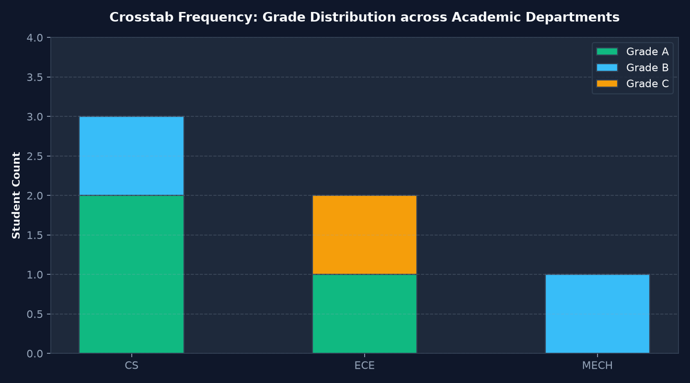
Code Example 2 (E-Commerce): Heatmap of Orders by City and Category
In retail sales, cross-tabulating cities against product categories reveals regional consumer purchasing preferences:
# E-commerce orders log df_retail_ct = pd.DataFrame({ "city": ["Mumbai", "Bengaluru", "Mumbai", "Delhi", "Bengaluru", "Mumbai", "Delhi", "Bengaluru", "Mumbai", "Delhi"], "category": ["Electronics", "Fashion", "Electronics", "Home", "Fashion", "Home", "Electronics", "Electronics", "Fashion", "Home"] }) city_cat_table = pd.crosstab(df_retail_ct["city"], df_retail_ct["category"]) print(city_cat_table)
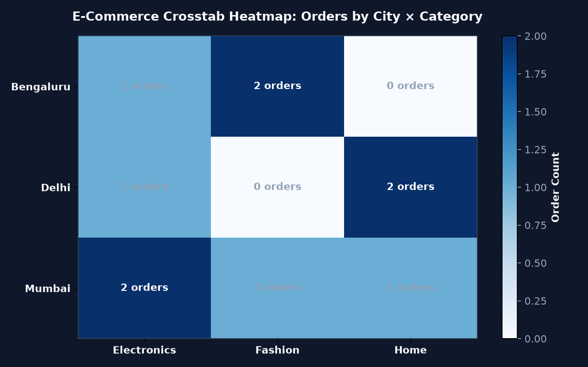
11. Reshaping Data for Visualization
Why do visualization libraries like Seaborn and Plotly almost exclusively demand Long-Format Data? Because plotting functions map visual aesthetics (such as x, y, hue, col, style) directly to individual columns in your DataFrame.
If your data is wide (e.g. Maths, Python, Stats are separate columns), you cannot pass hue='subject' to create grouped bar plots or multi-line graphs! You must first reshape your DataFrame to long format using melt().
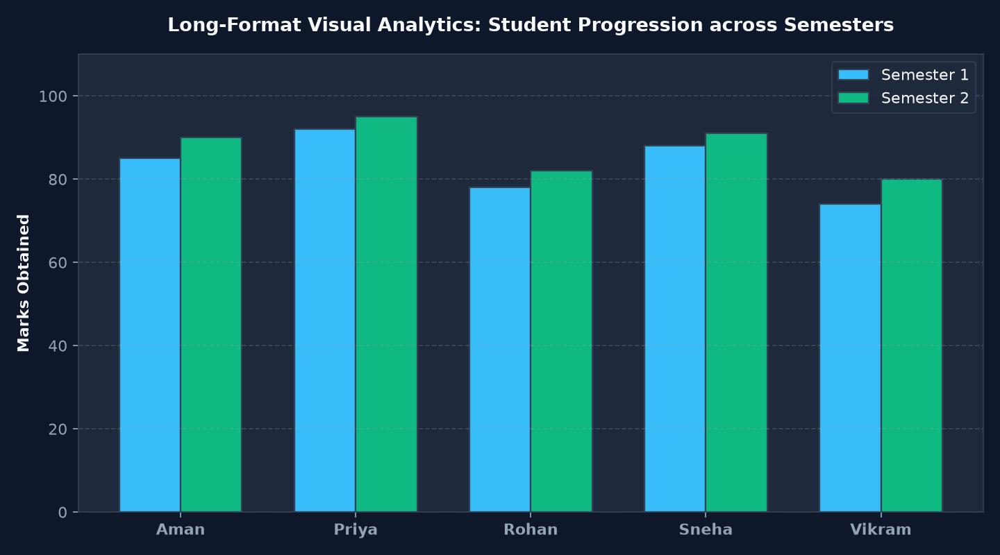
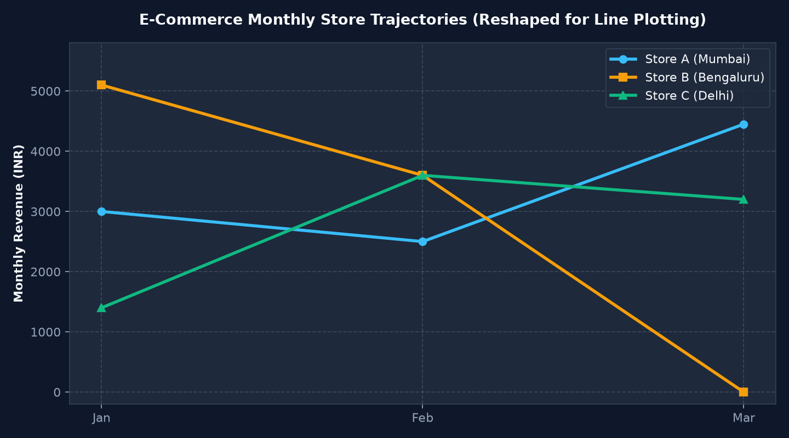
Code Example: Preparing Wide Data for Grouped Plotting
import pandas as pd # Wide table received from finance wide_report = pd.DataFrame({ "student": ["Aman", "Priya", "Rohan"], "Sem1": [85, 92, 78], "Sem2": [90, 95, 82] }) # Tidy reshape for chart libraries tidy_chart_data = wide_report.melt( id_vars="student", value_vars=["Sem1", "Sem2"], var_name="semester", value_name="score" ) print(tidy_chart_data)
12. Master Decision Guide & Visual Cheat Sheet
Follow this structured decision framework to always choose the exact right reshaping method for any data science task:
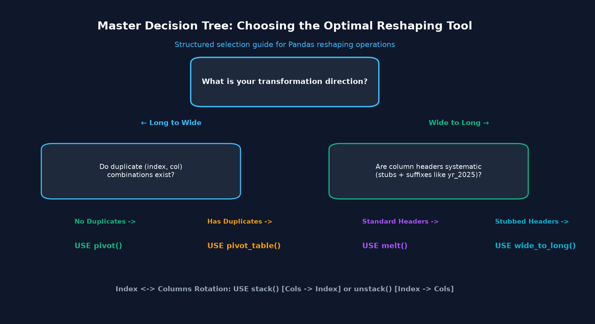
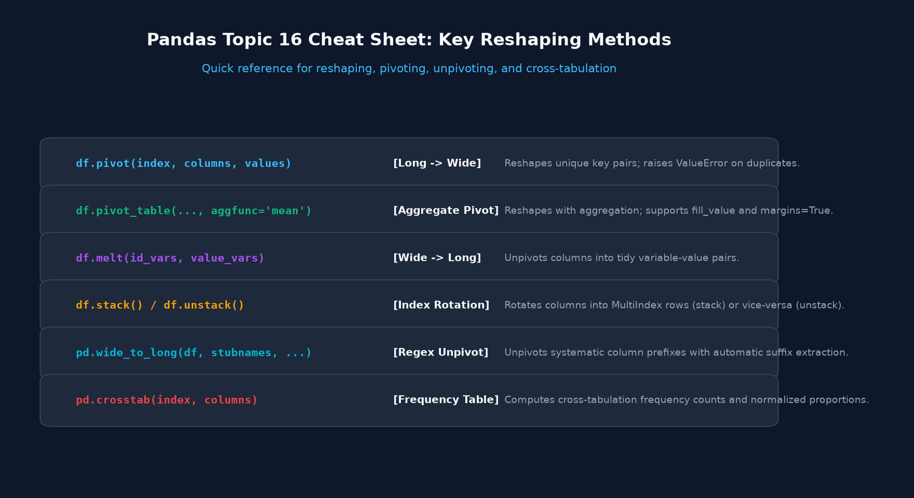
Reshaping Operations Master Matrix
| Operation | Direction | Handles Duplicates? | Input / Output Formats | When to Choose |
|---|---|---|---|---|
df.pivot() |
Long → Wide | No (Throws Error) | DataFrame → DataFrame | Unique 1:1 key pairs; pure shape change. |
df.pivot_table() |
Long → Wide | Yes (via aggfunc) |
DataFrame → DataFrame | Multiple records per cell needing sum, mean, count. |
pd.melt() |
Wide → Long | Yes (Preserves all) | DataFrame → DataFrame | Unpivoting columns into tidy rows for ML & plotting. |
df.stack() |
Wide → Long | Yes (Index-driven) | DataFrame → MultiIndex Series | Rotating column labels into row index levels. |
s.unstack() |
Long → Wide | Yes (Index-driven) | MultiIndex Series → DataFrame | Promoting inner row index levels to column headers. |
pd.wide_to_long() |
Wide → Long | Yes | DataFrame → MultiIndex DataFrame | Unpivoting systematic prefixes like yr_2025, score_1. |
pd.crosstab() |
Summary Matrix | Aggregates frequency | Series → DataFrame | Cross-tabulation frequency counts and percentages. |
13. Common Mistakes, Silent Errors & Troubleshooting Guide
Reshaping operations frequently produce subtle bugs that corrupt datasets without crashing your script. Below is your field guide to identifying and fixing the 12 most dangerous reshape pitfalls:
| # | Pitfall / Error | Likely Root Cause | Production Solution |
|---|---|---|---|
| 1 | ValueError: Index contains duplicate entries |
Calling pivot() on data that has duplicate (index, column) pairs. |
Switch to pivot_table() with justified aggfunc (e.g. 'mean' or 'sum'). |
| 2 | Accidental Average instead of Total | Forgetting to specify aggfunc in pivot_table() (defaults to 'mean'). |
Always explicitly write aggfunc='sum' for revenue, quantity, or financial amounts. |
| 3 | All Columns Melted into One | Omitting id_vars parameter in melt(). |
Explicitly supply identifier columns: id_vars=['student_id', 'name']. |
| 4 | Identifier Column Flattened as Value | Accidentally leaving entity IDs in value_vars. |
Carefully review value_vars list; never include primary keys in it. |
| 5 | MultiIndex Column Confusion | Pivoting multiple numeric columns creates a 2-level column tuple. | Flatten column names using df.columns = ['_'.join(c) for c in df.columns]. |
| 6 | Rotated Wrong Index Level | Calling unstack() without checking which index level is moved. |
Specify level=0 or level='dept' explicitly instead of guessing default -1. |
| 7 | Silent Row Order Shift | Assuming pivot() preserves the original row sequence. |
Pivot sorts unique index keys lexicographically; sort explicitly if order matters. |
| 8 | Spurious NaN Flooding | Non-overlapping combinations in pivot() produce NaN cells. |
Supply fill_value=0 in pivot_table() or chain .fillna(0). |
| 9 | crosstab() Percentage Confusion | Assuming crosstab() produces percentages by default. |
Pass normalize='index' (row %), 'columns' (col %), or 'all' (total %). |
| 10 | wide_to_long() Empty Output |
Misconfigured sep or suffix parameter not matching column strings. |
Ensure separator matches exactly (e.g. sep='_' for marks_2025). |
| 11 | Round-Trip Equality Failure | Comparing DataFrames with different index names or row orders. | Call .sort_values().reset_index(drop=True) before assert_frame_equal(). |
| 12 | Unintended Data Type Promotion | Integer columns promoted to float64 due to NaN insertion in wide matrix. |
Cast back to nullable integer: df.astype('Int64'). |
14. Guided Capstone Case Study A: College Performance Reshaping Lab
In this comprehensive real-world capstone, you will act as the Registrar Lead for an engineering institution. You receive an operational dataset recording 10 student exam attempts across semesters:
student_id,student,department,semester,subject,marks,attendance.
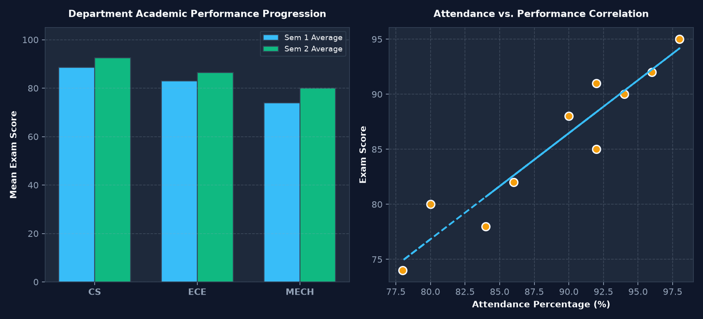
Full Step-by-Step Verified Workflow
import pandas as pd import numpy as np # Step 1: Ingest Institutional Exam Dataset college_df = pd.DataFrame({ "student_id": [101, 101, 102, 102, 103, 103, 104, 104, 105, 105], "student": ["Aman", "Aman", "Priya", "Priya", "Rohan", "Rohan", "Sneha", "Sneha", "Vikram", "Vikram"], "department": ["CS", "CS", "CS", "CS", "ECE", "ECE", "ECE", "ECE", "MECH", "MECH"], "semester": [1, 2, 1, 2, 1, 2, 1, 2, 1, 2], "subject": ["Python", "DBMS", "Python", "DBMS", "Signals", "Circuits", "Signals", "Circuits", "Thermo", "Fluids"], "marks": [85, 90, 92, 95, 78, 82, 88, 91, 74, 80], "attendance": [92.0, 94.0, 96.0, 98.0, 84.0, 86.0, 90.0, 92.0, 78.0, 80.0] }) # Step 2: Validate Uniqueness of (student, semester, subject) has_dups = college_df.duplicated(subset=["student", "semester", "subject"]).any() assert not has_dups, "Integrity violation: duplicate records found!" print("Uniqueness Verified: Ready for transformation.") # Step 3: Pivot Student Subject Marks Matrix piv_student_subjects = college_df.pivot(index="student", columns="subject", values="marks") print("\n=== Student Subject Matrix ===") print(piv_student_subjects) # Step 4: Pivot Table Department-Semester Academic Summary dept_sem_summary = college_df.pivot_table( index="department", columns="semester", values=["marks", "attendance"], aggfunc="mean" ).round(2) print("\n=== Department-Semester Performance ===") print(dept_sem_summary) # Step 5: Verify Critical Averages via Assertions assert dept_sem_summary.loc["CS", ("marks", 1)] == 88.5 assert dept_sem_summary.loc["CS", ("marks", 2)] == 92.5 print("\nAssertions Verified: CS Sem 1 = 88.5, CS Sem 2 = 92.5.")
15. Guided Capstone Case Study B: E-Commerce Sales Reshaping Lab
In this second guided case study, you are the Principal BI Engineer for a major omnichannel electronics retail chain. You receive a transaction ledger with 10 orders across three flagship retail outlets:
order_id,store,city,product,category,month,quantity,unit_price,revenue.
Your objective is to build a verified pipeline that converts raw transaction logs into an executive Store-by-Month report, unpivots it back for time-series forecasting, and cross-tabulates city purchases with product categories.
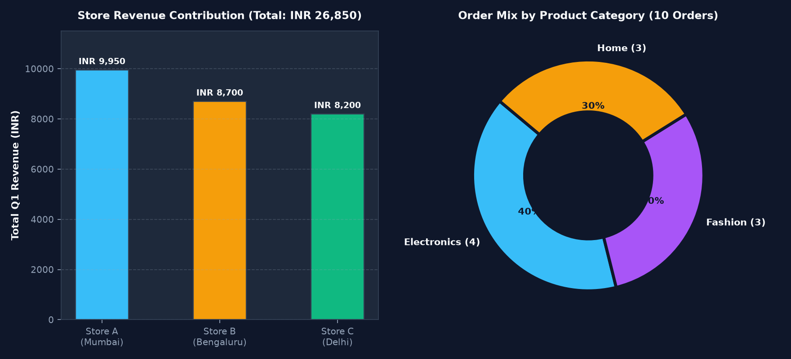
Full Step-by-Step Verified Workflow
import pandas as pd # Step 1: Ingest Transaction Log ecommerce_df = pd.DataFrame({ "order_id": ["ORD-1", "ORD-2", "ORD-3", "ORD-4", "ORD-5", "ORD-6", "ORD-7", "ORD-8", "ORD-9", "ORD-10"], "store": ["Store_A", "Store_B", "Store_A", "Store_C", "Store_B", "Store_A", "Store_C", "Store_B", "Store_A", "Store_C"], "city": ["Mumbai", "Bengaluru", "Mumbai", "Delhi", "Bengaluru", "Mumbai", "Delhi", "Bengaluru", "Mumbai", "Delhi"], "category": ["Electronics", "Fashion", "Electronics", "Home", "Fashion", "Home", "Electronics", "Electronics", "Fashion", "Home"], "month": ["Jan", "Jan", "Feb", "Feb", "Jan", "Mar", "Mar", "Feb", "Mar", "Jan"], "quantity": [2, 4, 1, 3, 2, 2, 1, 2, 3, 1], "unit_price": [1500, 800, 2500, 1200, 950, 1100, 3200, 1800, 750, 1400] }) ecommerce_df["revenue"] = ecommerce_df["quantity"] * ecommerce_df["unit_price"] # Step 2: Validate Raw Revenue total_pipeline_rev = ecommerce_df["revenue"].sum() assert total_pipeline_rev == 26850, f"Expected 26850, got {total_pipeline_rev}" print(f"Total Pipeline Revenue: INR {total_pipeline_rev:,}") # Step 3: Executive Store by Month Pivot Table store_month_rev = ecommerce_df.pivot_table( index="store", columns="month", values="revenue", aggfunc="sum", fill_value=0, margins=True ) print("\n=== Store by Month Revenue Report ===") print(store_month_rev) # Step 4: Reconcile Margins with Original Raw Sum assert store_month_rev.loc["All", "All"] == total_pipeline_rev print("Reconciliation Verified: Pivot margins exactly match ledger total!") # Step 5: Unpivot Back to Long Format for Time-Series Analysis clean_matrix = store_month_rev.drop(index="All", columns="All").reset_index() melted_monthly = clean_matrix.melt( id_vars="store", value_vars=["Jan", "Feb", "Mar"], var_name="month", value_name="monthly_rev" ) assert melted_monthly["monthly_rev"].sum() == total_pipeline_rev # Step 6: City by Category Crosstab city_cat_ct = pd.crosstab(ecommerce_df["city"], ecommerce_df["category"], margins=True) print("\n=== City by Category Order Counts ===") print(city_cat_ct)
16. Real-World Interactive Practice Exercises & Capstone Mini-Project
Mastering data reshaping requires active hands-on coding. Work through these 21 interactive exercises spanning 5 progressive tiers, culminating in a comprehensive multi-subject analytics Capstone project. Click any accordion summary to reveal the complete tested solution code and step-by-step breakdown.
Tier 1: Beginner Warm-Up Questions (Q1 – Q5)
Question 1: Basic pivot() from Long to Wide Format
Scenario: You have a long DataFrame with ['emp', 'quarter', 'bonus']. Convert it into a wide format where each employee has a row and quarters are columns.
import pandas as pd df = pd.DataFrame({ "emp": ["A", "A", "B", "B"], "quarter": ["Q1", "Q2", "Q1", "Q2"], "bonus": [5000, 7000, 6000, 8000] }) res = df.pivot(index="emp", columns="quarter", values="bonus") print(res)
Explanation: index='emp' groups rows, columns='quarter' creates horizontal headers, and values='bonus' fills cells.
Question 2: Basic melt() Unpivoting
Scenario: Convert a wide table with columns ['city', 'temp_morning', 'temp_evening'] into long format with columns ['city', 'time_of_day', 'temperature'].
df_temp = pd.DataFrame({
"city": ["Delhi", "Mumbai"],
"temp_morning": [22, 26],
"temp_evening": [18, 24]
})
melted = df_temp.melt(
id_vars="city",
var_name="time_of_day",
value_name="temperature"
)
print(melted)
Explanation: id_vars='city' preserves the city name while temperature headers are collapsed into rows.
Question 3: Using pivot_table() with aggfunc='sum'
Scenario: Calculate total sales by region and product when regions have multiple sales transactions for the same product.
df_sales = pd.DataFrame({
"region": ["North", "North", "South"],
"product": ["Pen", "Pen", "Book"],
"amount": [50, 70, 120]
})
pt = df_sales.pivot_table(index="region", columns="product", values="amount", aggfunc="sum", fill_value=0)
print(pt)
Explanation: aggfunc='sum' aggregates the two North Pen sales (50 + 70 = 120), and fill_value=0 cleans up empty intersections.
Question 4: Simple stack() Transformation
Scenario: Take a small 2x2 DataFrame and rotate its column headers into row index levels using stack().
df_box = pd.DataFrame([[1, 2], [3, 4]], index=["R1", "R2"], columns=["C1", "C2"]) stacked = df_box.stack() print(stacked)
Explanation: Columns C1 and C2 became inner index levels in a Series.
Question 5: Basic crosstab() Frequency
Scenario: Count occurrences of customer feedback ratings (Good, Bad) across two store branches.
store = ["A", "A", "B", "B", "B"] feedback = ["Good", "Good", "Good", "Bad", "Bad"] ct = pd.crosstab(store, feedback) print(ct)
Explanation: Store A has 2 Good and 0 Bad ratings; Store B has 1 Good and 2 Bad ratings.
Tier 2: Intermediate Questions (Q6 – Q10)
Question 6: Adding Subtotal Margins in pivot_table()
Scenario: Create a pivot table with margins enabled and verify that the 'All' column reflects the overall total.
df = pd.DataFrame({
"dept": ["CS", "CS", "IT"],
"gender": ["M", "F", "M"],
"salary": [50000, 60000, 55000]
})
pt = df.pivot_table(index="dept", columns="gender", values="salary", aggfunc="sum", fill_value=0, margins=True)
print(pt)
Explanation: The 'All' margins row and column show grand subtotals totaling 165,000.
Question 7: Unstacking Specific Level of MultiIndex
Scenario: Given a MultiIndex Series with levels ['year', 'quarter'], unstack level=0 (year) to columns.
idx = pd.MultiIndex.from_tuples([(2024, "Q1"), (2024, "Q2"), (2025, "Q1")], names=["year", "quarter"]) s = pd.Series([100, 150, 120], index=idx) unstacked = s.unstack(level=0) print(unstacked)
Explanation: Specifying level=0 moved the outer year index into horizontal column headers.
Question 8: Unpivoting Yearly Stubs with wide_to_long()
Scenario: Reshape a DataFrame with columns ['firm_id', 'rev_2023', 'rev_2024'] into long format using pd.wide_to_long().
df_firm = pd.DataFrame({
"firm_id": [1, 2],
"rev_2023": [500, 700],
"rev_2024": [600, 850]
})
w2l = pd.wide_to_long(df_firm, stubnames="rev", i="firm_id", j="year", sep="_")
print(w2l)
Explanation: wide_to_long() automatically parsed 2023 and 2024 as numeric years.
Question 9: Normalized Row Proportions in crosstab()
Scenario: Compute row percentages in a crosstab so that each row sums to 100%.
dev_type = ["Frontend", "Frontend", "Backend", "Backend"] pref_lang = ["JS", "JS", "Python", "Java"] ct_norm = pd.crosstab(dev_type, pref_lang, normalize="index") * 100 print(ct_norm.round(1))
Explanation: normalize='index' divides each cell by the total sum of that row.
Question 10: Multi-Column pivot_table() Aggregation
Scenario: Aggregate both marks and attendance by Department and Semester in a single call.
df = pd.DataFrame({
"dept": ["CS", "CS"],
"sem": [1, 1],
"marks": [80, 90],
"att": [92, 96]
})
pt = df.pivot_table(index="dept", columns="sem", values=["marks", "att"], aggfunc="mean")
print(pt)
Explanation: Passing a list to values= creates a hierarchical column index grouping each metric by semester.
Tier 3: Practical Coding Challenges (Q11 – Q13)
Question 11: Perfect Round-Trip Verification Test
Challenge: Write a Python function that takes any clean long DataFrame, pivots it, melts it back, and validates 100% equivalence using pd.testing.assert_frame_equal.
def test_round_trip(df_long, id_col, var_col, val_col): wide = df_long.pivot(index=id_col, columns=var_col, values=val_col) reconstructed = wide.reset_index().melt( id_vars=id_col, var_name=var_col, value_name=val_col ) s1 = df_long.sort_values(by=[id_col, var_col]).reset_index(drop=True) s2 = reconstructed.sort_values(by=[id_col, var_col]).reset_index(drop=True) pd.testing.assert_frame_equal(s1, s2) print("Test Passed: Perfect round-trip verified!") df_sample = pd.DataFrame({ "id": [1, 1, 2, 2], "exam": ["Mid", "Fin", "Mid", "Fin"], "score": [75, 85, 80, 90] }) test_round_trip(df_sample, "id", "exam", "score")
Explanation: Pre-sorting and index resetting guarantees exact deterministic alignment for assertion testing.
Question 12: Resolving Duplicate Keys with Multiple Aggregations
Challenge: In a single pivot table, compute both the 'mean' and 'sum' of sales across stores and months.
sales = pd.DataFrame({
"store": ["S1", "S1", "S2"],
"month": ["Jan", "Jan", "Jan"],
"amount": [100, 200, 300]
})
pt_multi = sales.pivot_table(
index="store",
columns="month",
values="amount",
aggfunc=["mean", "sum"]
)
print(pt_multi)
Explanation: Passing a list aggfunc=['mean', 'sum'] constructs MultiIndex columns reflecting both metrics.
Question 13: Preparing Multi-Subject Data for Seaborn Hue Plotting
Challenge: Convert a wide matrix of 5 subjects into tidy format, and calculate the mean and standard deviation per subject.
df_wide = pd.DataFrame({
"student": ["Aman", "Priya", "Rohan"],
"Maths": [80, 92, 74],
"Physics": [85, 89, 78],
"Chemistry": [88, 95, 82]
})
tidy = df_wide.melt(id_vars="student", var_name="subject", value_name="score")
summary = tidy.groupby("subject")["score"].agg(["mean", "std"]).round(2)
print(summary)
Explanation: Once melted into long format, simple groupby operations yield instant statistical parameters across all subjects.
Tier 4: Multiple Choice Questions (Q14 – Q18)
Question 14: What happens if pivot() encounters duplicate keys?
Options:
A) It automatically computes the mean of the values.
B) It keeps the first value and silently discards subsequent values.
C) It raises ValueError: Index contains duplicate entries, cannot reshape.
D) It fills duplicate cells with NaN.
Correct Answer: C
Detailed Explanation: DataFrame.pivot() is strictly a shape-manipulation function without an aggregation engine. If two or more rows share identical index and column keys, it immediately raises a ValueError.
Question 15: What is the default aggregation function of pivot_table()?
Options:
A) 'sum'
B) 'count'
C) 'mean'
D) 'first'
Correct Answer: C
Detailed Explanation: Pandas defaults to aggfunc='mean'. If you are calculating totals (like revenue or quantity), you must explicitly supply aggfunc='sum'.
Question 16: Which method converts wide columns into long rows?
Options:
A) df.pivot()
B) pd.melt()
C) df.unstack()
D) pd.crosstab()
Correct Answer: B
Detailed Explanation: pd.melt() is the official unpivot method designed to transform wide columns into tidy rows.
Question 17: What does df.stack() return when applied to a 2D DataFrame?
Options:
A) A 3D NumPy array.
B) A MultiIndex Series.
C) A flattened single-index DataFrame.
D) A Python dictionary.
Correct Answer: B
Detailed Explanation: stack() moves the column labels into the innermost level of the row index, producing a MultiIndex Series.
Question 18: What is the primary purpose of pd.crosstab()?
Options:
A) To join two DataFrames on a foreign key.
B) To compute frequency counts and contingency tables between categorical factors.
C) To fill missing values with interpolation.
D) To unstack hierarchical column indexes.
Correct Answer: B
Detailed Explanation: pd.crosstab() builds contingency frequency tables to evaluate distributions between categorical variables.
Tier 5: Debugging Exercises (Q19 – Q20)
Question 19: Debugging Accidental Identifier Melting
Buggy Code:
# Buggy: Programmer forgot id_vars df = pd.DataFrame({"id": [1, 2], "math": [80, 90], "sci": [85, 95]}) bad_melt = pd.melt(df)
The Bug: Because id_vars was omitted, 'id' was treated as a variable, mixing employee IDs with exam scores in the value column!
Corrected Code:
fixed_melt = pd.melt(df, id_vars="id", var_name="subject", value_name="score") print(fixed_melt)
Question 20: Debugging Wrong Aggregation in Financial Reshaping
Buggy Code:
# Buggy: Default mean computes average transaction instead of total revenue df_tx = pd.DataFrame({"branch": ["A", "A"], "m": ["Jan", "Jan"], "rev": [1000, 3000]}) bad_report = df_tx.pivot_table(index="branch", columns="m", values="rev") # bad_report shows 2000 instead of 4000!
Corrected Code:
fixed_report = df_tx.pivot_table(
index="branch",
columns="m",
values="rev",
aggfunc="sum"
)
print(fixed_report)
Capstone Mini-Project: Student Performance Reshaping & Visualization Lab (Q21)
Question 21 (Capstone): Student Performance Reshaping & Visualization Lab
Comprehensive Problem Statement: You are provided a semester marks dataset for 4 students across 3 core subjects (Python, DBMS, Statistics):
- 1. Validate that no duplicate attempts exist for the same student and subject.
- 2. Convert the long marks data into an executive student-by-subject wide matrix using
pivot(). - 3. Calculate each student's semester GPA average across subjects.
- 4. Unpivot the wide matrix back into long format using
melt()and verify equality against the original table usingpd.testing.assert_frame_equal(). - 5. Produce a crosstab of performance grades (Distinction ≥ 85, Pass < 85).
import pandas as pd # Starter dataset df_students_lab = pd.DataFrame({ "student": ["Aman", "Aman", "Aman", "Priya", "Priya", "Priya", "Rohan", "Rohan", "Rohan"], "subject": ["Python", "DBMS", "Stats", "Python", "DBMS", "Stats", "Python", "DBMS", "Stats"], "marks": [85, 90, 82, 92, 95, 88, 74, 80, 78] }) # Task 1: Check duplicate uniqueness assert not df_students_lab.duplicated(subset=["student", "subject"]).any() # Task 2: Pivot long to wide matrix piv_matrix = df_students_lab.pivot(index="student", columns="subject", values="marks") # Task 3: Calculate Student Mean GPA piv_matrix["GPA_Avg"] = piv_matrix.mean(axis=1).round(2) print("=== Executive Student Subject Matrix ===") print(piv_matrix) # Task 4: Round-Trip Equality Validation reconstructed = piv_matrix.drop(columns=["GPA_Avg"]).reset_index().melt( id_vars="student", value_vars=["DBMS", "Python", "Stats"], var_name="subject", value_name="marks" ) s1 = df_students_lab.sort_values(by=["student", "subject"]).reset_index(drop=True) s2 = reconstructed.sort_values(by=["student", "subject"]).reset_index(drop=True) pd.testing.assert_frame_equal(s1, s2) print("\nRound-Trip Verification: PASSED (100% Data Preserved)") # Task 5: Performance Grade Crosstab df_students_lab["category"] = df_students_lab["marks"].apply(lambda m: "Distinction" if m >= 85 else "Pass") ct_perf = pd.crosstab(df_students_lab["student"], df_students_lab["category"]) print("\n=== Student Distinction Crosstab ===") print(ct_perf)
Extension Challenge: Priya earned Distinctions in all 3 subjects (DBMS 95, Python 92, Stats 88), while Aman scored 2 Distinctions! The round-trip asserted 100% data preservation without data loss.
17. Summary, Best Practices Checklist, Comprehensive Glossary & Topic 17 Preview
Topic 16 Core Architectural Summary
Throughout this comprehensive guide, we mastered the complete suite of Pandas data reshaping tools:
pivot()performs pure shape transformation from Long to Wide when unique 1:1 key pairs exist. It strictly raisesValueErrorif duplicates are present.pivot_table()resolves duplicate key combinations by applying mathematical aggregations (aggfunc='mean'|'sum'|'count'). It supportsfill_valueand subtotalmargins=True.melt()is the reverse unpivot operation converting wide columns into tidy long rows, essential for Seaborn visualizations and machine learning models.stack()andunstack()perform 90-degree axis rotations between column labels and hierarchical MultiIndex levels.wide_to_long()parses systematic wide column prefixes and suffixes into tidy longitudinal formats without manual regex scripting.crosstab()constructs frequency counts and normalized contingency percentage proportions between categorical variables.
Data Architect's Reshaping Pre-Flight Checklist
| Check | Question to Ask Before Reshaping | Recommended Best Practice |
|---|---|---|
| ☑ 1 | Do duplicate (index, column) pairs exist? |
If yes, use pivot_table(); if no, use pivot(). |
| ☑ 2 | Does the business question ask for totals or averages? | Always explicitly pass aggfunc='sum' for revenue or quantities. |
| ☑ 3 | Did I supply id_vars during melt()? |
Preserve primary entity identifiers to avoid melting everything. |
| ☑ 4 | Are resulting MultiIndex columns flattened? | Call df.reset_index() to return to a standard 2D flat table. |
| ☑ 5 | Did I verify the round-trip equality? | Use pd.testing.assert_frame_equal() after pre-sorting to confirm zero data corruption. |
Comprehensive Key Terminology Glossary
| Term | Definition & Architectural Significance |
|---|---|
| Wide Format | Data representation where attributes and measurements are spread horizontally across multiple individual columns. |
| Long (Tidy) Format | Data layout where each row represents a single independent observation, characterized by dedicated Identifier, Variable, and Value columns. |
| Pivot | Reshaping operation turning distinct row values into column headers. |
| Unpivot (Melt) | Reshaping operation collapsing multiple wide column headers down into vertical rows. |
| Aggregation Function (aggfunc) | Mathematical formula (mean, sum, count) used by pivot_table() to reduce multiple duplicate cell records into a single scalar value. |
| Margins | Subtotal summary row and column labeled 'All' added by pivot_table() or crosstab(). |
| Stack | Operation that rotates horizontal DataFrame column headers down into the row index as an inner MultiIndex level. |
| Unstack | Operation that rotates an inner row index level up into horizontal column headers. |
| Contingency Table | A matrix displaying frequency distribution counts between categorical variables generated by pd.crosstab(). |
| Stubnames | The shared prefix common to systematic wide columns (e.g. 'marks' in marks_2025) parsed by wide_to_long(). |
Topic 17: Date & Time Operations (DateTimeIndex, Resampling, Windowing, TimeZones) — Now that you know how to reshape DataFrames into wide and long formats, you will master temporal time-series manipulation, timestamp parsing, rolling windows, and business calendar resampling.